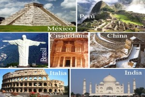
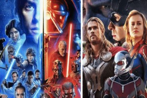
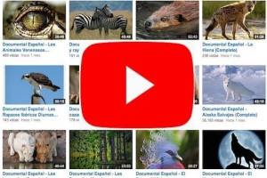

Bienvenidos a Mi Galeria Multimedia
En esta galeria encontraran las siguientes imágenes y videos:

Las 7 maravillas del Mundo Moderno
Fueron escogidas en el año 2007 mediante un concurso público internacional en el que participaron más de 100 millones de personas de todo el mundo. La votación se realizó mediante SMS e Internet.

Algunas de Mis Películas Favoritas
Pequeños fragmentos de algunas mis peliculas favoritas de ciencia ficcion, aventuras, y super heroes de DC Comics y Marvel (Star Wars Episodio V, Justice League, Avengers y Avatar).

Documentales de Youtube
Un habito adquirido durante la pandemia. Puedes ver documentales en los canales oficiales de History Channel, National Geographic, DW de Alewmania, entre otros.